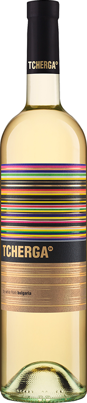
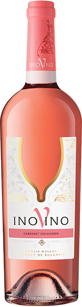
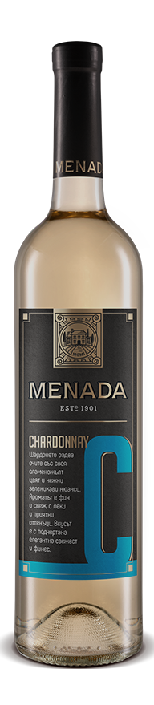
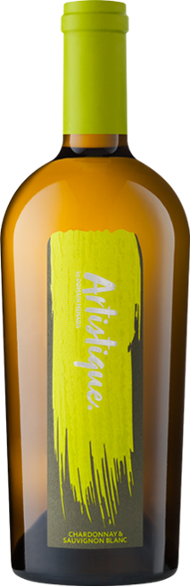

Tcherga04 is the wine of the contemporary urban people – then, now and forever – it’s the spirit of Bulgaria in a glass of wine. A glass of wine that holds a unique blend of varieties showcasing the colourful diversity of the Bulgarian soul.

InoVino is unforgettable.It’s an irreplaceable part of our personal ritual, the good ending of every day – a glass of nice wine to celebrate both the small and the grand victories.



Contemporary, yet always comprising in itself the good taste and quality that it is long known for, MENADA is an heir of ancient traditions. Transformed, with a brand new look, MENADA lives by the saw that what is important is hidden from the eyes - in our case, inside the bottle.
Artistique is the symbol of our creative drive. The magic of the process that turns grape into wine, with a single move of the stick…or the brush.
